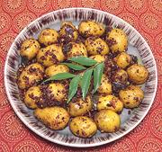

|
Potato Masala PoryialIndia, Chettinad - Chinna Urulai Kizhangu Masala Poriyal | ||||
| Makes: Effort: Sched: DoAhead: |
1-1/2 # *** 50 min Yes |
Brightly Spicy Potatoes, served as a warm or cold appetizer, or as a warm side to Sambar, Kootu, or the like. Poryial is a fairly dry vegetable stir fry. | |||
|
1-1/2 4 3/4 4 ------- 2 4 12 ------- 2 1 1/2 ------- 3 |
# oz in cl --- t t --- t T t --- T |
Potatoes, tiny (1) Onions Ginger Garlic -- Tempering Mustard Seed (2) Urad Dal (3) Curry Leaves (4) -- Spicing Turmeric Chili Powder (5) Salt ------- Oil |
DO AHEAD - (30 min 5 min work)
|